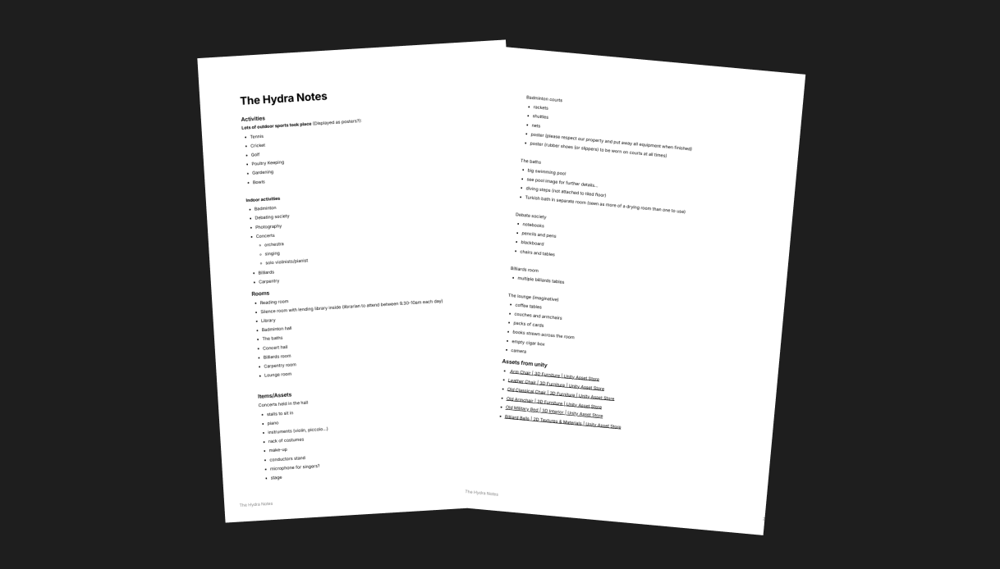
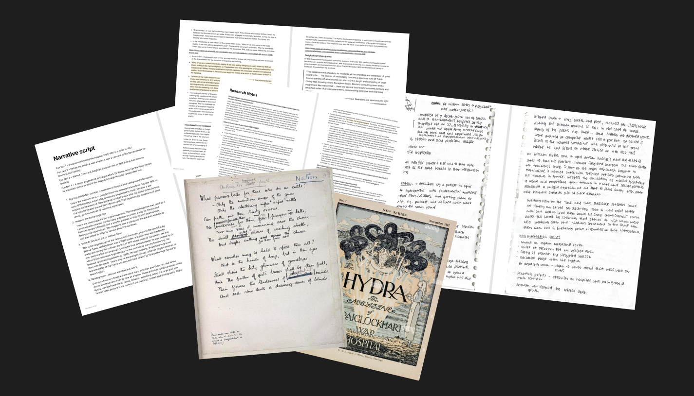

‘Dottyville’ Craiglockhart War Hospital - Virtual Reconstruction
Dottyville is a Unity-based 3D reconstruction of the Craiglockhart Hydropathic during its time as a WW1 war hospital.
The project aimed to accurately recreate the historical environment and provide an interactive educational experience
allowing users to explore and learn about the building's history.
Role: Historical Researcher, Environment Designer, Educational Content Creator
Team: 6
Tools: Unity, Figma
Project Goals
- Produce an explorable 3D model of Craiglockhart War Hospital
- Recreate the model with historical accuracy to help preserve its history
- Create an educational narrative through interactive elements to inform and interest users
- Create the foundations for a further developed experience or game
Historical Research and Environment Design
To create a realistic replica multiple stages of research were conducted:
Primary Research - Site Visit
When the project was initialised we were guided towards digital floorplans however although these were helpful to create
the building outline they were very hard to read. To better understand the original building layout we organised a tour
with the Senior Curator of Napier University Heritage Collections.
This allowed us to survey the Craiglockhart campus and the War Poets Collection, providing valuable insight into
the hospital's history and spatial layout.
Secondary Research - Historical Sources
The meeting highlighted the significance of the Hydra, a magazine created by the patients at the war hospital. This research
informed the overall understanding of the space and its daily use to inform the design of the rooms becoming the basis for
our asset creation and sourcing list.


Interactive Educational Elements
To make the project educational and allow users to interact with the building, I designed narrative touchpoints throughout the building.
Utilising my previous and further research I created informative and educational pop-ups that appear when users enter certain rooms or interact with objects.
This approach allows users to learn about the buildings history while allowing them the freedom to explore freely.

Reflection
- Research plays a crucial role in creating a realistic, historically accurate environment
- Site visits helped to confirm assumptions about the building layout and provide valuable expert knowledge
- Balancing historical accuracy with technical constraints was a key challenge
View EVRI Case Study